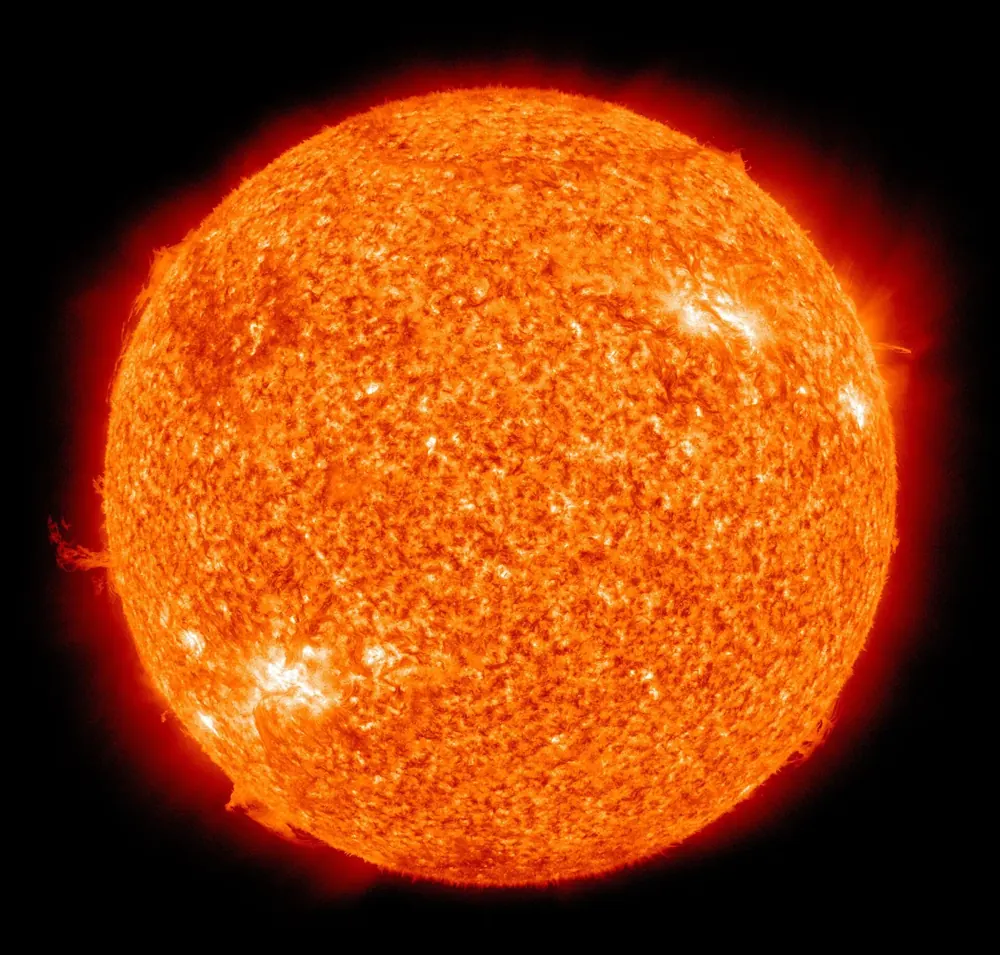
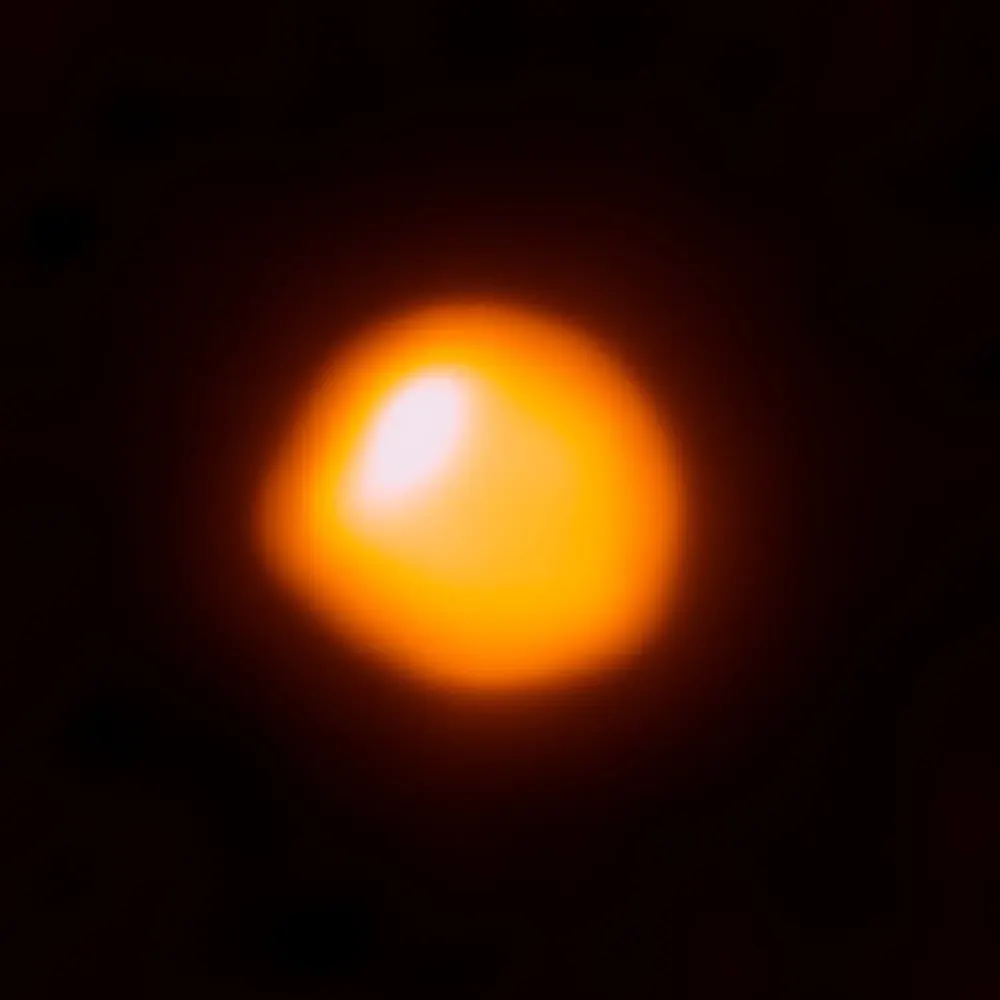
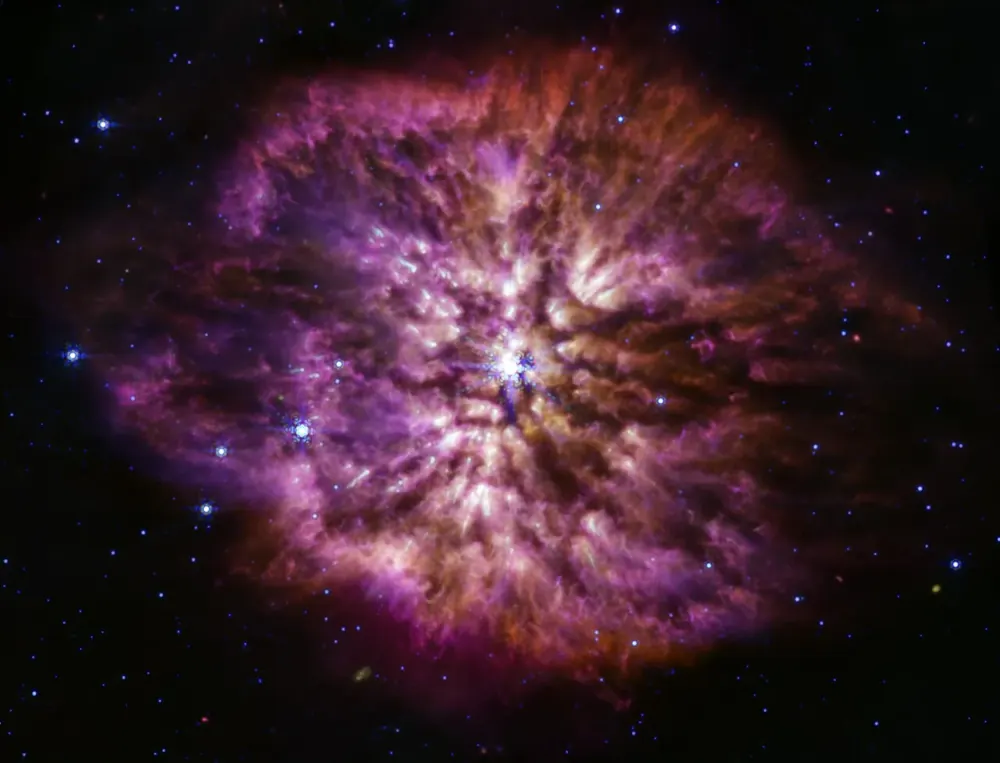
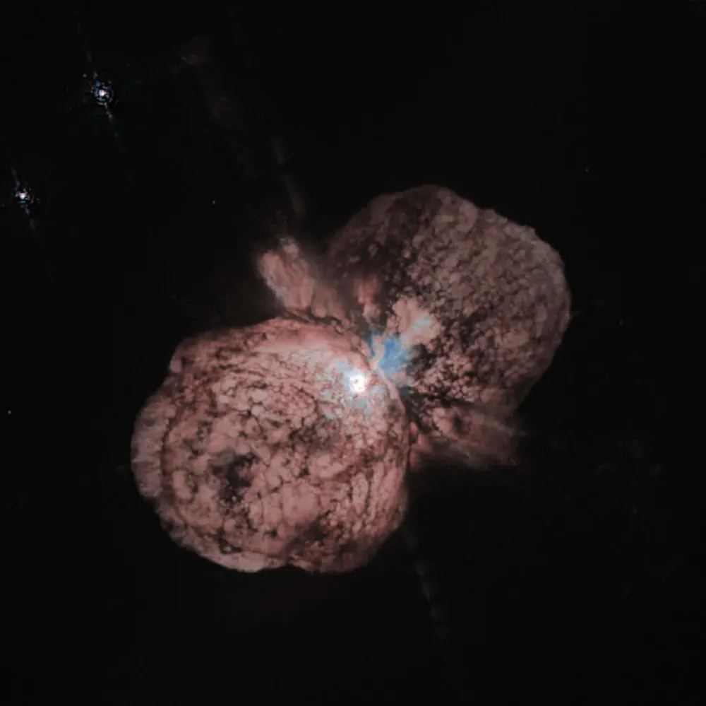

← StarsतारेEstrellasEstrelasÉtoilesالنجوم
The life of a starतारे का जीवनLa vida de una estrellaA vida de uma estrelaLa vie d’une étoileحياة نجم
A star’s mass at birth decides how long it lives and how it dies.जन्म के समय तारे का द्रव्यमान तय करता है कि वह कितना जिएगा और कैसे मरेगा।La masa de una estrella al nacer decide cuánto vive y cómo muere.A massa de uma estrela ao nascer decide quanto tempo ela vive e como morre.La masse d’une étoile à sa naissance décide de sa durée de vie et de sa fin.كتلة النجم عند ولادته تحدد مدة حياته وكيف يموت.

📷 NASA/SDO (AIA) · Public domain

📷 ALMA (ESO/NAOJ/NRAO)/E. O’Gorman/P. Kervella · CC BY 4.0

📷 NASA, ESA, CSA, STScI, Webb ERO Production Team · CC BY 4.0

📷 Jon Morse (University of Colorado) and NASA · Public domain
Mass is everythingद्रव्यमान ही सब कुछ हैLa masa lo es todoA massa é tudoLa masse est toutالكتلة هي كل شيء
A heavier star has more fuel, but it burns it far faster, because the crushing weight makes its core hotter. So big stars live short, bright lives, and small stars live almost forever.भारी तारे के पास ज़्यादा ईंधन होता है, पर वह उसे कहीं तेज़ी से जलाता है, क्योंकि भारी वज़न उसके केंद्र को और गर्म कर देता है। इसलिए बड़े तारे छोटा, चमकीला जीवन जीते हैं, और छोटे तारे लगभग हमेशा जीते हैं।
| StarताराEstrellaEstrelaÉtoileنجم | Time spent shining on hydrogenHydrogen से चमकने का समयTiempo brillando con hidrógenoTempo brilhando com hidrogênioTemps passé à briller grâce à l’hydrogèneمدة السطوع بالهيدروجين |
|---|---|
| Red dwarf (0.1 Sun)लाल बौना (0.1 सूर्य)Enana roja (0,1 Sol)Anã vermelha (0,1 Sol)Naine rouge (0,1 Soleil)قزم أحمر (0.1 شمس) | about 3 trillion yearsलगभग 3 लाख करोड़ साल |
| The Sun (1 Sun)सूर्य (1 सूर्य)El Sol (1 Sol)O Sol (1 Sol)Le Soleil (1 Soleil)الشمس (1 شمس) | about 10 billion yearsलगभग 10 अरब साल |
| Vega-like (3 Suns)Vega जैसा (3 सूर्य)Como Vega (3 soles)Como Vega (3 sóis)Comme Véga (3 soleils)مثل النسر الواقع (3 شموس) | about 642 million yearsलगभग 64.2 करोड़ साल |
| Massive star (10 Suns)भारी तारा (10 सूर्य)Estrella masiva (10 soles)Estrela massiva (10 sóis)Étoile massive (10 soleils)نجم ضخم (10 شموس) | about 32 million yearsलगभग 3.2 करोड़ साल |
| Very massive (25 Suns)बहुत भारी (25 सूर्य)Muy masiva (25 soles)Muito massiva (25 sóis)Très massive (25 soleils)ضخم جدًا (25 شمسًا) | about 3 million yearsलगभग 32 लाख साल |
Worked out from the rule of thumb lifetime ≈ 10 billion years × mass⁻²·⁵. Real stars vary.मोटे नियम से निकाला गया: उम्र ≈ 10 अरब साल × द्रव्यमान⁻²·⁵। असली तारे थोड़े अलग हो सकते हैं।
What will happen to the Sunसूर्य के साथ क्या होगाQué le pasará al SolO que vai acontecer com o SolCe qui arrivera au Soleilماذا سيحدث للشمس
In about 5 billion years the Sun will run out of hydrogen in its core. The core will shrink and heat up, and the outer layers will swell into a red giant more than 100 times wider than today. It will swallow Mercury and Venus, and maybe Earth.लगभग 5 अरब साल में सूर्य के केंद्र में hydrogen ख़त्म हो जाएगी। केंद्र सिकुड़कर गर्म होगा, और बाहरी परतें फूलकर आज से 100 गुना से ज़्यादा चौड़ा red giant बन जाएँगी। यह बुध और शुक्र को निगल लेगा, और शायद पृथ्वी को भी।
Then it will gently blow its outer layers away into a glowing planetary nebula, and its core will remain as a white dwarf about the size of Earth, slowly cooling for trillions of years.फिर यह अपनी बाहरी परतें धीरे से उड़ाकर चमकती planetary nebula बना देगा, और इसका केंद्र पृथ्वी जितने white dwarf के रूप में बचेगा, जो खरबों साल तक धीरे-धीरे ठंडा होगा।
And the big onesऔर बड़े तारेY las grandesE as grandesEt les grandesوالنجوم الكبيرة
Stars of more than about 8 Suns go further. After helium they fuse carbon, neon, oxygen and silicon, building layers like an onion, until the core is iron. Fusing iron gives no energy, so the core collapses in less than a second and the star explodes as a supernova.लगभग 8 सूर्य से भारी तारे आगे जाते हैं। Helium के बाद वे carbon, neon, oxygen और silicon जोड़ते हैं, प्याज़ जैसी परतें बनाते हुए, जब तक केंद्र लोहे (iron) का न हो जाए। लोहा जोड़ने से ऊर्जा नहीं मिलती, इसलिए केंद्र एक सेकंड से कम में ढह जाता है और तारा supernova बनकर फट जाता है।